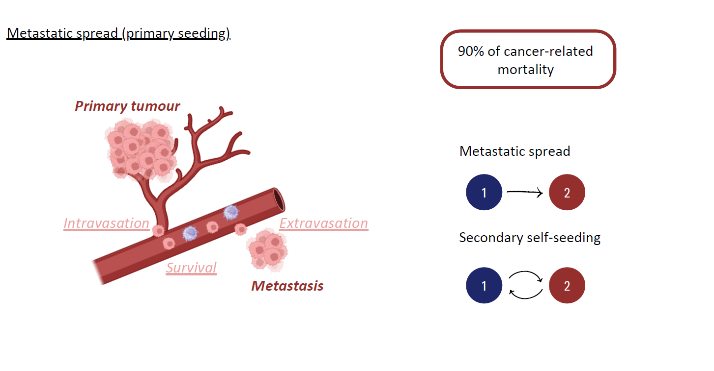
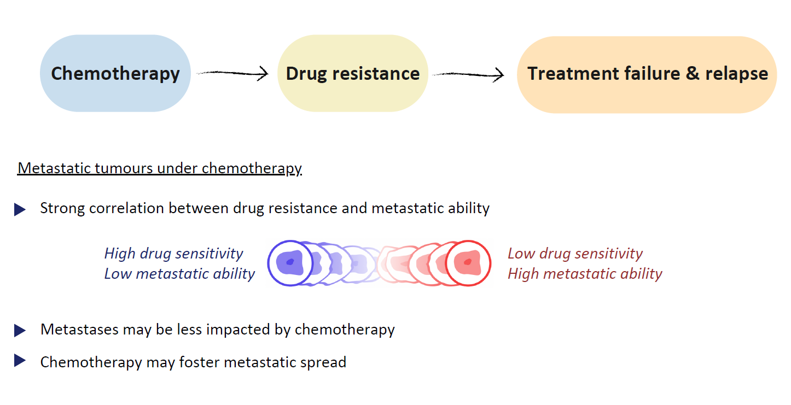
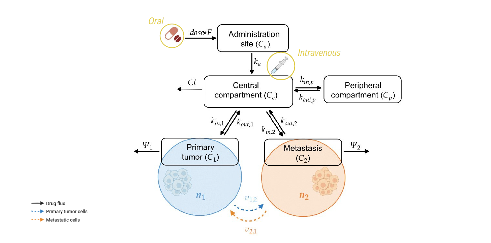
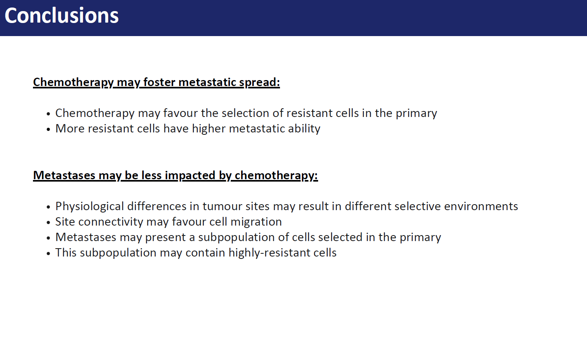

Biological context and motivation
In $2022$ around $9.7$ million of people died for cancer worldwide, accounting for approximately $15\%$ of total deaths, making it one of the primary health problems globally. In particular, metastases are responsible for approximately $90\%$ of cancer-related mortality. These form following a multi-step process comprising the migration of cancer cells from the original site to regional or distant organs and lymph nodes, e.g. by accessing the lymphatic or blood vessels. In this latter case the metastatic steps include local invasion of regions surrounding the primary tumour, the cancer-induced formation of new blood vessels to access more nutrients and foster cancer growth, process known as angiogenesis, intravasation, survival in the circulatory system and extravasation through vascular walls of distant sites. The process of primary tumour cells colonization of other tissues is known as metastatic spread, or primary seeding, meanwhile when cells return to the original site or an existing metastasis they contribute to self-seeding. Moreover, if the population in the metastatic site grows and acquires itself the ability to metastasise, it can spread to other sites, phenomenon known as secondary seeding.
Chemotherapy, i.e. the use of cytotoxic drugs to kill cancer cells, is to this day considered the most effective, and thus most widely used, modality of cancer treatment. The development of drug resistance confers a selective advantage upon the cancer cell population, as cancer cells exhibit reduced sensitivity to cytotoxic compounds, and represents a significant challenge in cancer therapies as it often contributes to disease relapse. Despite the efforts put into the development of treatment strategies evading or reverting the development of drug resistance, this process becomes significantly more complex in metastatic cancers, given the exposure of tumours in distinct organs to disparate concentrations of therapeutic agents and environmental factors. In fact, it has been reported that even if standard chemotherapy effectively controls disease progression at the primary tumour site, it often fails to influence metastatic populations. Moreover, many studies suggest that there is a strong correlation between treatment resistance and metastatic ability, i.e. cancer cells with lower sensitivity to cytotoxic agents usually also manifest enhanced disseminating properties. Therefore the development of drug resistance in the primary tumour during chemotherapy, even in reversible cases, may favour the persistence of its metastases. Nevertheless, it is still unclear whether metastases are intrinsically more resistant than the primary tumour or if their reduced sensitivity arises because they originate from particularly aggressive cell subpopulations or due to subsequent evolution after dissemination. It may therefore be beneficial to test existing hypotheses on the development of drug resistance in metastatic tumours under chemotherapy using proof-of-concept theoretical frameworks.
Mathematical modelling background
Mathematical modelling is a valuable tool for gaining insights into the mechanisms driving cancer evolution and the emergence of intratumour and intertumour heterogeneity, for simulating complex and long-term dynamics that may take years to observe in real-life settings, and for designing optimised therapeutic strategies. All three objectives share a common aim of paving the way towards precision medicine, i.e. the innovative idea of targeting therapies on patients in order to increase their efficacy.
Many mathematical models have been previously employed to describe the different steps of the metastatic cascade, see the review article and references therein. These may focus, for instance, on the development of metastatic phenotypes, their intravasation and extravasation, or extensive cell dissemination and potential evolution of cells from the primary to the metastatic site. as the evolution of invasive phenotypes, cells intravasation and extravasation, cells dissemination and interactions between primary and secondary tumors. Moreover, some of them also investigate the effect of therapeutic treatments, such as chemotherapy, radiotherapy and immunotherapy, alone or combined, on metastatic cancers. Among these, Sun et al. accounted for the existence of a sensitive and a drug-resistant subpopulation in the primary site. Nevertheless, drug-resistance levels may be better captured on a continuum, and phenotypic heterogeneity in the metastatic site may also play an important role in the failure of treatment.
However, only few studies in literature incorporate tumour heterogeneity concerning chemo-resistance in the modelling framework.
Many studies in literature investigate the adaptive processes that underlie the development of intratumour phenotypic heterogeneity and the emergence of resistance to chemotherapeutic agents, see for instance and references therein. Among these, many works consider models comprising non-local partial differential equations (PDEs) modelling the adaptive dynamics of cancer cell populations structured by a continuous phenotypic trait linked with the cell sensitivity to cytotoxic agents. These models enabled the study of the progressive development of increasing levels of drug resistance during treatment and the role of intratumour heterogeneity in cancer persistence after therapy. This was also possible thanks to their higher amenability to analytical investigations compared to their stochastic counterparts and the mathematical theory supporting such analysis. Some of these studies further applied optimal control methods in order to explore the most effective treatment strategies. While this mathematical framework had not been applied to metastatic tumours prior to this manuscript, Mirrahimi considered the adaptive dynamics of phenotype-structured populations in communicating patches, further developed with applications to speciation in ecology or host-pathogen interactions, which is easily comparable with the scenario of connected primary tumour and metastatic sites, which can be easily translated into a scenario with primary tumour and a discrete number of distant metastases.
Pharmacokinetic (PK) modelling effectively captures the time course of the drug concentration according to various administration modes and allows to quantify the relationship between the dose and the in situ drug concentration. In these models, the body is divided into compartments, also referred to as building blocks, each of which is associated to a variable, or quantity, describing the drug concentration in the block. The compartments are then linked to each other through the drug exchange. This kind of models are usually coupled with a pharmacodynamic (PD) one, which captures the effect of the drug on the considered disease, and employed to find suitable drug dosing schedules to achieve optimal drug concentrations in the target tissues. Moreover, they can also be expanded to include physiological aspects of the considered tissues, such as as organ blood flow and size, in order to explore their influence on the drug exposure.
Synopsis
We propose a mathematical model for the evolutionary dynamics of metastatic tumours under chemotherapy, where physiological differences of the different tumour sites are integrated within a PK model of drug delivery. In particular, the model comprises a system of coupled non-local PDEs for the phenotypic distribution of the cancer cells in the primary tumour and the metastatic site, structured by their level of resistance to the chemotherapeutic agent, and ordinary differential equations (ODEs) for the pharmacokinetics. We focus on a biological framework including a primary tumour that already faced angiogenesis and a newly-formed yet growing metastasis, where cancer cells characterised by higher levels of drug resistance are assumed to be more aggressive and thus able to migrate to distant sites at higher rates. We restrict our attention to a highly perfused primary tumour and a metastatic site where cells are proliferating but not yet able to disseminate, exploring different levels of tumour vascularisation for the metastasis.
We specifically consider BRAF-mutated melanoma, which is a form of skin cancer that develops in melanocytes, i.e. the cells responsible for melanin production, from the uncontrolled proliferation of cells induced by a mutation of the BRAF gene. Despite its lower incidence, BRAF-mutated melanoma is the most aggressive and lethal among the skin cancers, particularly due to its high metastatic rate. These tumours can spread locally, regionally and distantly, with the most common metastatic sites being skin and subcutaneous tissue, followed by lungs, liver, bones, and brain. Metastatic melanomas are often treated with the chemotherapeutic agent Dabrafenib, a kinase inhibitor of mutated BRAF. Despite the rapid response, with a median time around $6$ weeks, and short-term increase in patient survival, resistance to Dabrafenib persists with a median progression-free survival of approximately $6–8$ months. For these reasons, a metastatic BRAF-mutated melanoma under Dabrafenib treatment constitutes the ideal case study to adopt for our model, which we carefully calibrate from the literature employing PK parameter values estimated from in vivo and ex vivo data from patients.
